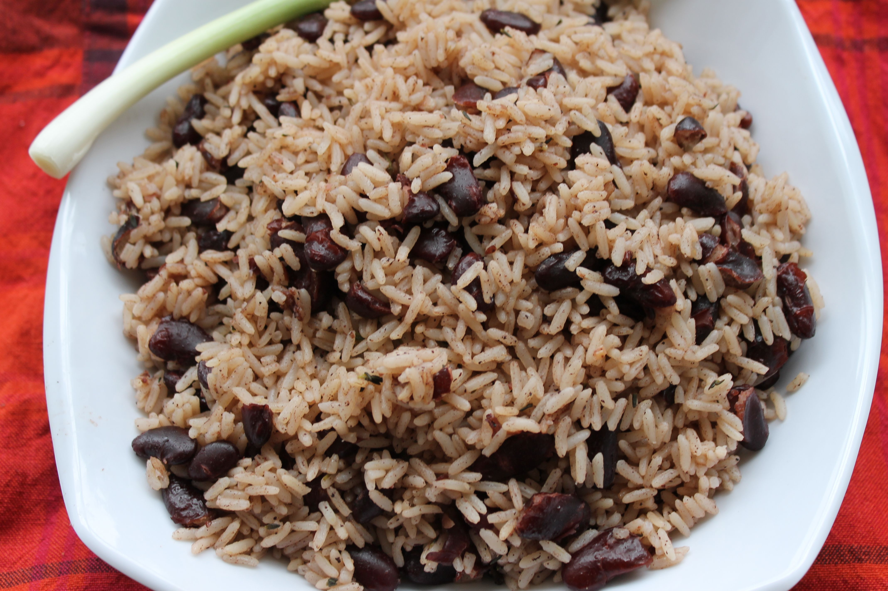

Rice and Peas

Jamaican Cuisine
This is a picture of the Jamaican rice and peas dish
Ingredients List
- 2 cups long grain white rice (brown rice can be substituted)
- 3/4 cups unsweetened coconut milk
- 3 stalks scallions (AKA green onions)
- 1 clove garlic chopped
- 1 whole scotch bonnet pepper (AKA habanero) chopped
- 1 3/4 cups dried kidney beans canned kidney beans can be used as a substitute
- 2 springs thyme dried
- 1/2 tbs black pepper
- 1/2 tbs salt
- 7 whole allspice seeds (AKA pimento seeds)
Instructions
- The first thing you must do if you're using dried kidney beans is to make sure you soak them overnight in a bowl of water.
This softens the texture of the beans. I prefer dried beans, but you can use the canned kidney beans instead.
Drain the water from the beans and rinse thoroughly with water.
- Place your beans in a medium saucepan, add about 3 cups of water and boil for about 1 hr under a medium flame.
Your beans should now be tender (test by sticking a fork into one of them).
- While your beans are simmering, you can now add your unsweetened coconut milk, and stir for about 5 minutes.
- Then you add your chopped garlic, scallions (green onions), thyme, allspice seeds and scotch bonnet pepper.
- Add your salt and pepper to the mix
- Stir under a medium-high flame for about 5 minutes or so.
Then you can add your rice and cook until the rice is cooked and fluffy, which takes about ½ hr to 40 minutes.
There you have it, delicious Jamaican rice and peas.